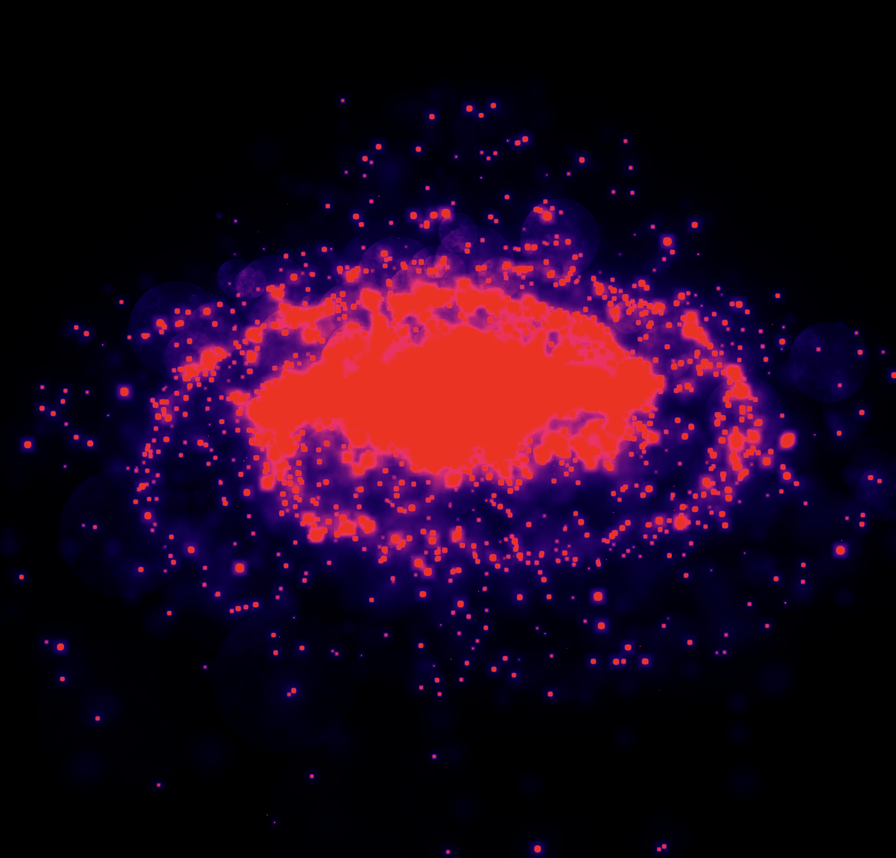

Galaxy Editor Milestone Report
Work by: Sultan Jamalbekov, Ryan Trac, Alex Benny, Ruben Gonzalez
Summary of Accomplishments
- Started with open source code by Eric Lin.
- The original code statically generated a galaxy and launched real-time interactive render in the browser.
Original galaxy render
- Implemented real-time parameter toggling for galaxy features like arm pitch, bar length, halo density, and star size variance.
|
Controls before (can only navigate the render))
|
Controls after (can redefine the galaxy)
|
- Added a new object type: nebulae, with density and scale parameters for enhanced visual depth.
- Developed custom artistic shaders (e.g., black-white, invert, comic, rainbow cycle, heatmap) with UI switching for different effects.
- Created a stable interactive demo allowing users to adjust parameters and shaders in real time, with regeneration on changes.
Preliminary Results
- The demo generates diverse galaxies: e.g., barred spirals with halos, varied arm tightness, and region-based colors (bluer arms for young stars).
- Nebulae add glowing clouds in arms/core, tunable for prominence (higher density = more vibrant star-forming regions).
The new nebulae object
- Shaders transform visuals: black-white for contrast, invert for negative effect, comic for 2D cartoon with outlines, rainbow cycle for animated hues, heatmap for thermal density mapping.
 Default (from original project)
Default (from original project)
|
|
Black & White
|
Inverse
|
|

Heatmap
|
 RainbowCycle
RainbowCycle
|
- Performance is smooth (high FPS) with real-time updates, building intuition on galactic physics through experimentation.
Progress Reflection Relative to Plan
- Original plan: Merge 2D canvas input for procedural generation with shaders by milestone.
- Accomplished: Built on static render to create interactive parameter-based generation and multiple custom shaders; added nebulae object.
- Challenges: Integrating 2D canvas for user-drawn input and physically realistic shaders proved more difficult than expected, requiring deeper Three.js/GLSL study.
- Glad to have a stable, enhanced demo for the milestone, exceeding baseline with real-time toggles and artistic features.
Updated Work Plan before presentation
- Focus on studying Three.js and shaders; implement 2D canvas input for user-defined galaxy shapes; integrate with procedural generation.
- Merge canvas input with shaders; add more physically realistic shader options; finalize interactive render and custom effects; prepare presentation and peer reviews.